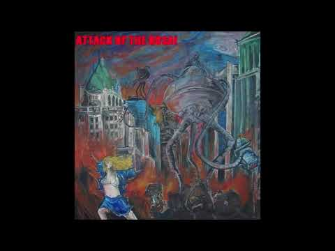

Music
I play guitar and piano.
Ponderosa
Ponderosa was a rock band from Vancouver, British Columbia. I was the band’s lead guitarist. We recorded the CDIS sessions in Burnaby in 2003, followed by a live set at Vancouver’s Fairview Pub in February 2005. Our debut album Attack of the Rosa! was released by Neverlost Records on 22 June 2005.
From the archives: Ponderosa at CiTR’s SHiNDiG semifinals, Railway Club, 23 November 2004.

Attack of the Rosa!
Our 2005 debut album from Vancouver, BC, released by Neverlost Records.
Listen to the full album on YouTube“Low-fi, loud and totally excellent.”
Live at the Fairview
Recorded live at the Fairview Pub in Vancouver, Canada, on 13 February 2005. Seven tracks from the set.
- Uhhh...2:50
- Trotskyist-Terrorist Counterrevolutionary3:26
- Jimmy5:09
- Alien Amnesia4:30
- Dick in the Wind9:08
- Worm on a Line4:40
- Hullerto3:44
CDIS Sessions
Three tracks recorded at CDIS in Burnaby, British Columbia, in 2003.
- Uhhh...2:55
- Da Stahrs Ahnd Da Stripes5:26
- Tell Me It’s You4:19